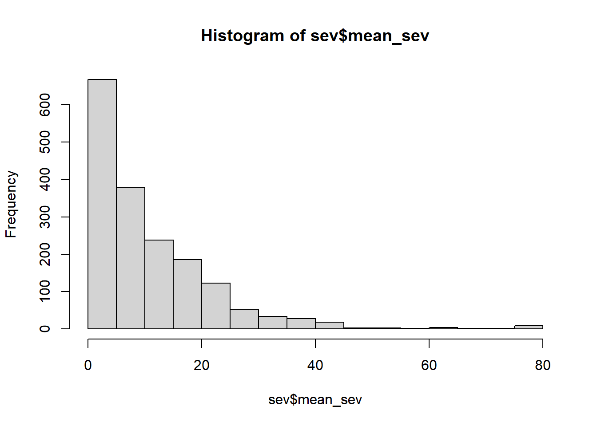
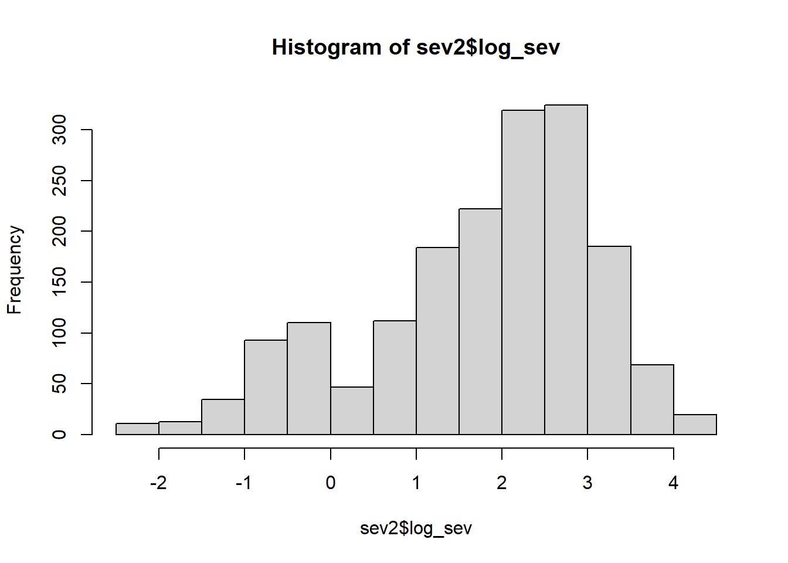
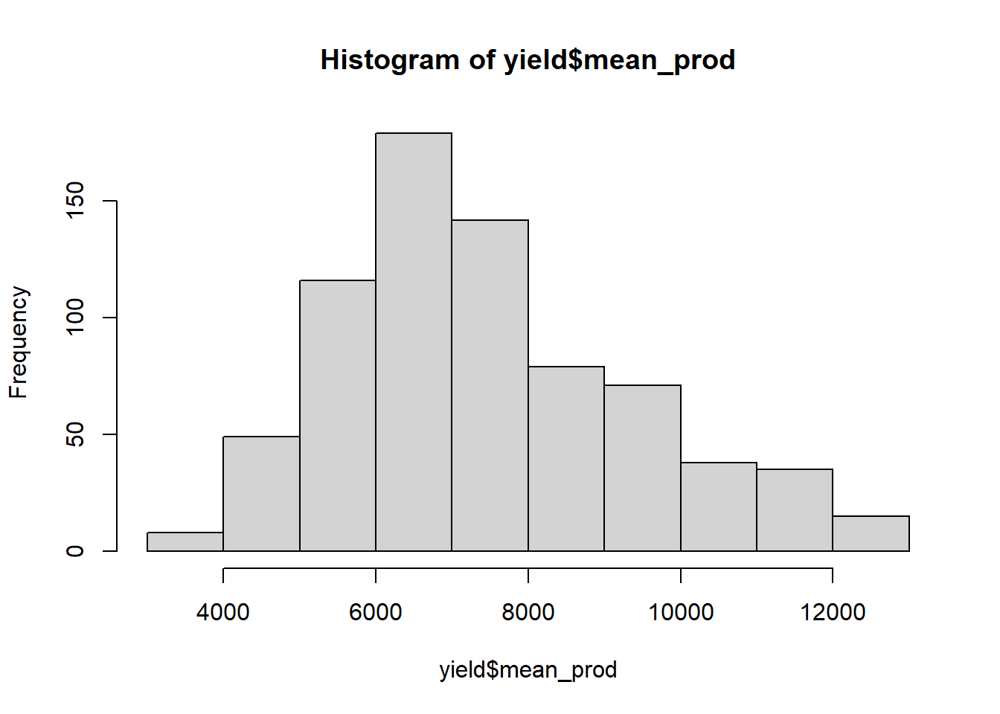
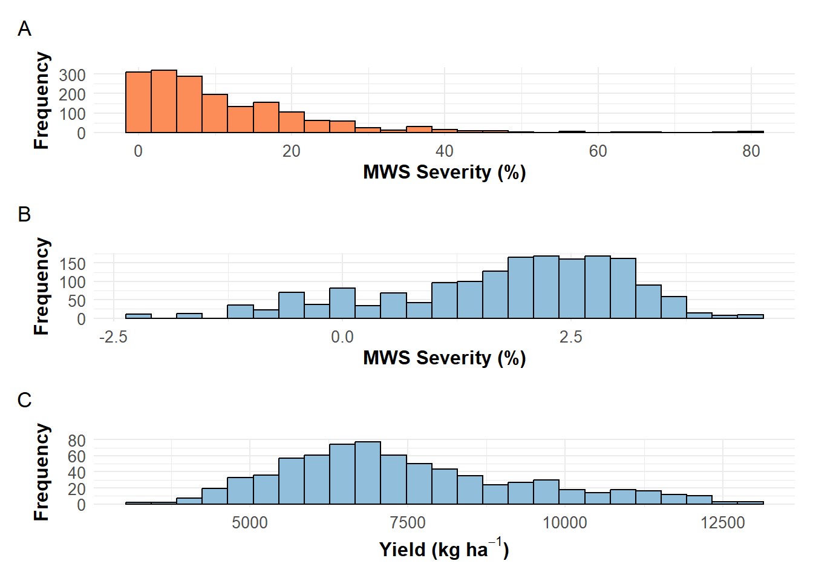

library(gsheet)
library(tidyverse)
library(broom)
library(dplyr)
library(tidyr)Organizing the data
Packages
Import Data
df = gsheet2tbl("https://docs.google.com/spreadsheets/d/1JAEAXsmb928CsyCzRbfTP2ilruEof2Qkr_zWUfaknOc/edit?gid=0#gid=0")
df# A tibble: 3,708 × 28
Ensaio ensaio_1 pesquisador ano n_aplicacao cultivar cultivo bioma
<dbl> <dbl> <chr> <dbl> <dbl> <chr> <chr> <chr>
1 2 1 Marina Senger 2024 NA <NA> <NA> <NA>
2 2 1 Marina Senger 2024 NA <NA> <NA> <NA>
3 2 1 Marina Senger 2024 NA <NA> <NA> <NA>
4 2 1 Marina Senger 2024 NA <NA> <NA> <NA>
5 2 1 Marina Senger 2024 NA <NA> <NA> <NA>
6 2 1 Marina Senger 2024 NA <NA> <NA> <NA>
7 2 1 Marina Senger 2024 NA <NA> <NA> <NA>
8 2 1 Marina Senger 2024 NA <NA> <NA> <NA>
9 2 1 Marina Senger 2024 NA <NA> <NA> <NA>
10 2 1 Marina Senger 2024 NA <NA> <NA> <NA>
# ℹ 3,698 more rows
# ℹ 20 more variables: municipio <chr>, regiao <chr>, estado <chr>,
# macrorregiao <chr>, mesorregiao <chr>, microrregiao <chr>,
# instituicao <chr>, `dose/ha` <chr>, registro <chr>, numero_registro <chr>,
# `concentração ia. no produto(%)` <chr>, codigo_frac <chr>, empresa <chr>,
# bloco <dbl>, produto <chr>, adjuvante <chr>, trat <dbl>, sev <dbl>,
# aacpd <dbl>, prod <dbl>Filtering the data
# Count in how many trials each product is present
ensaio_por_produto <- df %>%
group_by(produto) %>%
summarise(ensaio_count = n_distinct(ensaio_1))
# Count how many years are present within each trial
anos_por_ensaio <- df %>%
group_by(Ensaio) %>%
summarise(anos_count = n_distinct(ano))
# Filter products with more than 19 trials
produtos_com_mais_de_19_ensaios <- ensaio_por_produto %>%
filter(ensaio_count > 19)
# For these products, check in how many years they are present
anos_por_produto <- df %>%
filter(produto %in% produtos_com_mais_de_19_ensaios$produto) %>%
group_by(produto) %>%
summarise(anos_count = n_distinct(ano))
# Filter products present in at least 4 years
produtos_em_4_anos_ou_mais <- anos_por_produto %>%
filter(anos_count >= 4)
# Filter data with these products #continue with the 79 as the control is present in all
df_filtrado <- df %>%
filter(produto %in% produtos_em_4_anos_ou_mais$produto)Changing the name of the control
The control needs to be placed first so that the model can consider it as the intercept. Therefore, I added two A’s at the beginning
dat1 <- df_filtrado %>%
group_by(municipio, bloco, ensaio_1, produto,ano, estado, regiao) |>
mutate(produto = case_when(
produto == "Testemunha (Controle Negativo)" ~ "AACHECK",
produto == "A20259" ~ "trat_A20259",
TRUE ~ produto # Mantém os demais valores inalterados
)) |>
summarise(mean_sev = mean(sev),
mean_prod = mean(prod))Filtering again
Some trials will contain only the control, making it impossible to compare with other treatments within the same trial (hence, ANOVA cannot be performed). Therefore, trials where the same number (repetition count) appears only 4 times should be removed.
dat1 <- dat1 %>%
group_by(ensaio_1) %>%
filter(n() > 4) %>%
ungroup()
unique(dat1$estado)[1] "GO" "PR" "MS" "SP" "MG" "DF"Verifying some information
# Verifying the trials
tratamentos_por_ensaio <- dat1 %>%
group_by(ensaio_1) %>%
summarise(
total_tratamentos = n_distinct(produto), # Count unique treatments
.groups = "drop"
)
contagem_por_produto <- dat1 %>%
group_by(produto) %>%
summarise(
total_ensaios = n_distinct(ensaio_1), # Count unique trials
total_anos = n_distinct(ano), # Count unique years
anos = paste(sort(unique(ano)), collapse = ", "), # List sorted years
ensaios = paste(sort(unique(ensaio_1)), collapse = ", "), # List unique trials
.groups = "drop"
)
library(writexl)
write_xlsx(contagem_por_produto, "contagem_por_produto_após_filtro.xlsx")
write_xlsx(dat1, "dat1.xlsx")Sampling variances
sev <- dat1 %>%
filter(mean_sev != "NA") %>%
filter(mean_sev>0)
hist(sev$mean_sev)
sev2 = sev %>%
mutate(log_sev = log(mean_sev))
hist(sev2$log_sev)
length(unique(sev$ensaio_1))[1] 78yield <- dat1 %>%
filter(mean_prod != "NA")
hist(yield$mean_prod)
p1 = ggplot(sev, aes(x = mean_sev)) +
geom_histogram(bins = 25, fill = "#fc8d59", color = "black") +
labs(title = "",
x = expression(bold("MWS Severity (%)")),
y = expression(bold("Frequency"))) +
theme_minimal() +
theme(
plot.title = element_text(hjust = 0.5, face = "bold", size = 14),
axis.title = element_text(size = 12),
axis.text = element_text(size = 10)
)
p2 = ggplot(sev2, aes(x = log_sev)) +
geom_histogram(fill = "#91bfdb", color = "black", bins = 25) +
labs(title = "",
x = expression(bold("MWS Severity (%)")),
y = expression(bold("Frequency"))) +
theme_minimal() +
theme(
plot.title = element_text(hjust = 0.5, face = "bold", size = 14),
axis.title = element_text(size = 12),
axis.text = element_text(size = 10)
)
p3 = ggplot(yield, aes(x = mean_prod)) +
geom_histogram(fill = "#91bfdb", color = "black", bins = 25) +
labs(title = "",
x = expression(bold("Yield (kg ha"^-1*")")) ,
y = expression(bold("Frequency"))) +
theme_minimal() +
theme(
plot.title = element_text(hjust = 0.5, face = "bold", size = 14),
axis.title = element_text(size = 12),
axis.text = element_text(size = 10)
)
library(patchwork)
(p1/p2/p3)+ plot_annotation(tag_levels = 'A')
ggsave("distribution.png", dpi=600, height = 8,bg = "white", width = 6
)